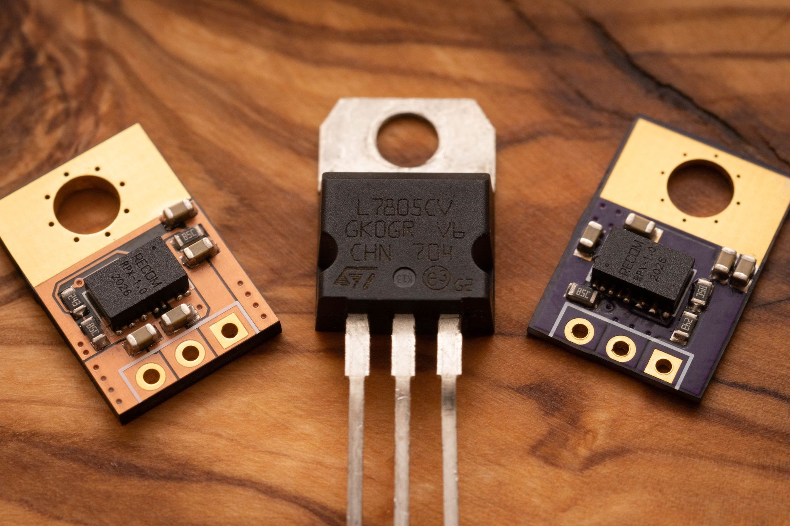
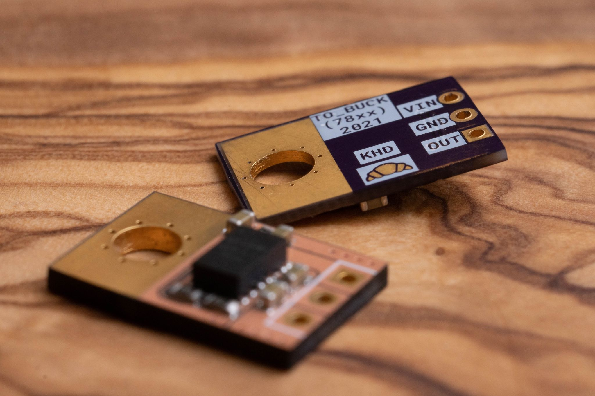

TO-220 Buck
Swap out your LDO for a switcher today, with these designs for a modern take on the TO-220 mounted LM1117 and 78xx series LDO regulators.

This project is my take on a quick and easy replacement for the 3-pin LDO. The aim is to replace TO-220 linear regulators with a switching converter, in pursuit of higher efficiencies and current capacity.
Using a Recom RPX series DC-DC module for its small size and incorporating SMD feedback resistors and bulk capacitance on board allows for a drop-in replacement to existing LDO designs, while remaining in the same overall footprint as the counterpart.
As LM1117 LDOs have a different pinout to the 78xx series of regulators, I designed two versions of the layout.
 The specifications are: - 1A Buck Converter (Can be swapped for a 1.5A module) - LM1117 and 78xx compatible versions - 4 - 36V input range - 0.8 - 30V output range - 15 x 10 x 2.2 mm dimensions
Decided to try out one of these integrated DC-DC converters. The small size means I can make it a drop in replacement for a TO-220 LDO. The @oshpark order is in! pic.twitter.com/Z4d8qgyHkd
— Ketan Desai (@ketszim) January 28, 2021